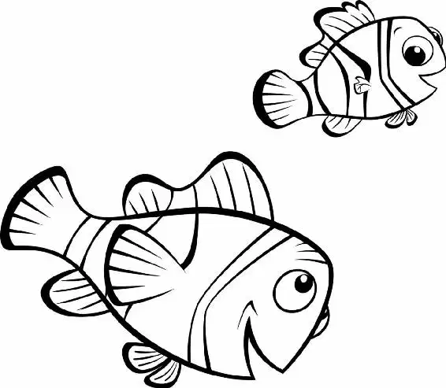

Deep in the ocean, the morning sun’s rays shone through the water. Inside an anemone, an excited young clownfish jumped awake. “First day of school!” he shouted to his father. “Wake up! Come on!” “I don’t want to go to school,” Marlin muttered.
“Not you, Dad. Me!” Nemo cried. “Huh?” Marlin shook himself awake.
“All right, I’m up. It’s time for school.”
“It’s time for school!” Nemo repeated in a singsong voice. He’d never been to school before. He was excited about exploring the ocean with his class. Visiting different places. Trying different things!
He’d never been far from his anemone home—and he couldn’t wait to see more of the ocean.
Nemo somersaulted and accidentally crashed out of the anemone. Before he knew it, he was stuck headfirst in some coral.
“Nemo!” Marlin shouted, fully awake. He raced outside.
“First day of school! First day of school!” Nemo sang in a muffled voice.
Quickly, Marlin pulled him from the coral, then tugged him inside their home.
“All right, where’s the break?” he asked Nemo in an anxious voice. “Are you woozy? How many stripes do I have?”
“I’m fine.” Nemo knew his dad was worried. He always worried.
“Answer the stripe question!” Marlin demanded.
“Three,” Nemo replied.
Marlin sighed, relieved. “How’s the lucky fin?”
Nemo glanced down at his fin. It was withered, a little misshapen from his encounter with the barracuda when he was still an egg. “Lucky.”
“Now, are you sure you want to go to school this year?” Marlin asked. “You can wait five or six years.”
No way, Nemo thought. “Dad, it’s time for school!” he repeated.
Marlin looked around. What could keep Nemo home, safe and sound, if only for a few more minutes? “Aha!” he cried. “You forgot to brush!”
Brushing was very important, Nemo knew. Clownfish lived in anemone homes because the anemones’ fronds were poisonous and protected the little fish from predators. Brushing up against the anemone stingers, a little bit every day, made the clownfish immune to the poison.
Nemo backed up into a tendril and brushed against it. “Okay, I’m done!” he said quickly.
“You missed a spot,” said Marlin. “Where?” Nemo asked.
“There!” Marlin tickled Nemo under a fin. “And right there.” He tickled Nemo under his other fin.
Nemo giggled, and together they swam out the door.
“Dad, maybe while I’m at school I’ll see a shark!” Nemo said excitedly. Then he asked, “How old are sea turtles?”
“I—I don’t know,” Marlin admitted. “Sandy Plankton, from next door, said that sea turtles live to be about a hundred years old!” Nemo cried.
“Well, if I ever meet a sea turtle, I’ll ask him,” Marlin said.
Father and son were approaching the schoolyard now.
Two young fish tossed a shell back and forth, playing catch. “Come on, you guys! Stop it! Give that back!” A hermit crab shouted at them.
“I wonder where we’re supposed to go,” Marlin said, looking around. He spotted a group of fathers. “Come on. We’ll try over here.”
“Excuse me,” Marlin said, approaching the other dads. “Is this where we meet his teacher?”
The other fish looked at him, surprised. “Well,” the sea horse said, “look who’s out of the anemone!” Then he turned toward a group of children playing in the nearby sand. “Sheldon!” the father called to his son. “Get out of Mr. Johannsen’s yard. Now!”
The giant flounder that the small fish were playing on suddenly sprang from his resting place in the sand. The children scattered, chasing each other, playing tag.
“Dad!” Nemo whispered. “Can I go play, too?”
“I would feel better if you’d play on the sponge beds,” Marlin replied.
Nemo glanced at the soft, springy sponge beds. Little newborn fish jumped on them, their mothers watching carefully. He wasn’t going over there—that was for babies!
Just then some children raced up. They were about Nemo’s age. They looked at him curiously.
“What’s wrong with his fin?” asked a pink octopus named Pearl.
“He looks funny,” said Tad, a butterfly fish. “Be nice,” Tad’s dad warned. “It’s his first time at school.”
“See this tentacle?” Pearl asked Nemo. “It’s actually shorter than all my other tentacles, but you can’t really tell.”
“I’m H2O intolerant,” said Sheldon.
“Achoo!”
“I’m obnoxious,” said Tad.
Just then a big blue manta ray swam up to the reef. “Mr. Ray!” shouted the children, rushing over to the teacher.
“Come aboard, explorers,” said Mr. Ray. The children lined up in front of their teacher. Nemo joined them, with Marlin right by his side.
Nemo turned red. “Dad, you can go now,” he whispered. But Marlin stayed right where he was.
One by one, the children climbed aboard Mr. Ray.
“Well, hello,” Mr. Ray said when Nemo reached him. “Who is this?”
“I’m Nemo.”
“Well, Nemo, all new explorers must answer a science question,” Mr. Ray said. “You live in what kind of home?”
“In an anemon-ene… amanemone…ammeneme…anemone,” Nemo said, struggling to say the word.
“Okay, okay, don’t hurt yourself,” Mr. Ray said. “Welcome aboard, explorer!”
“Just so you know,” Marlin added quietly, “he’s got a little fin. I find if he’s having trouble swimming, I let him take a break— ten, fifteen minutes—”
“Dad,” Nemo said, annoyed, “it’s time for you to go now!”
“Don’t worry,” Mr. Ray told Marlin. “We’re gonna stay together as a group.”
“Bye, Dad!” Nemo shouted as Mr. Ray swam away with the students.
“Bye, son!” Marlin called. “Be safe,” he said to himself.
Sheldon’s dad turned to Marlin. “Hey, you’re doing pretty well for a first-timer.”
“Well, you can’t hold on to them forever, can you?” Marlin replied.
“Yeah, I had a tough time when my oldest went out on the Drop-off,” Tad’s dad said.
“The Drop-off?” Marlin shouted. “Why don’t we just fry them up now and serve them with chips?”
Without any hesitation, he raced after Nemo.
